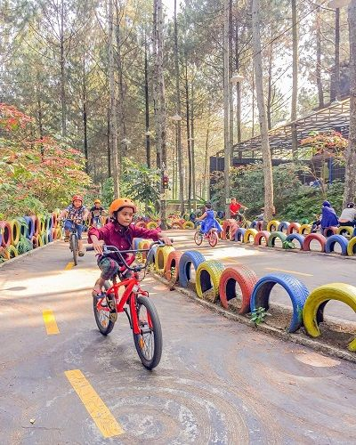
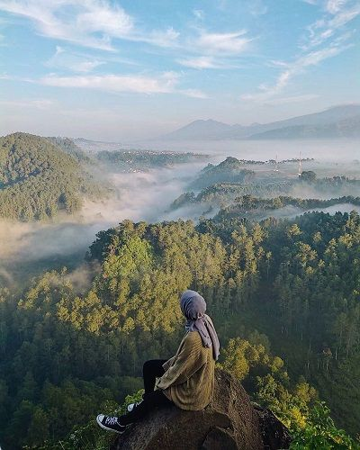
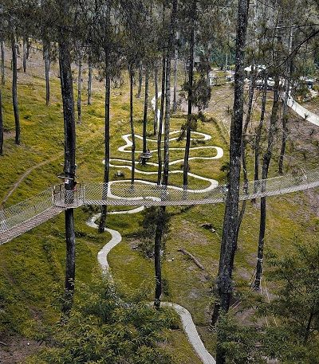
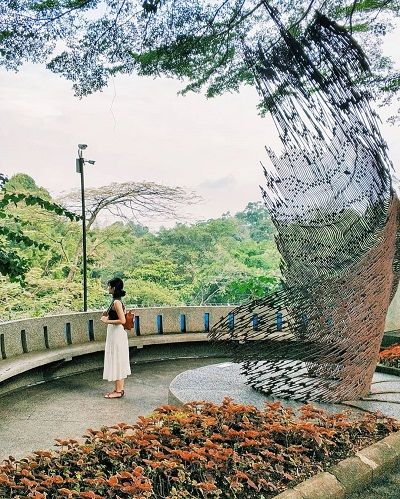
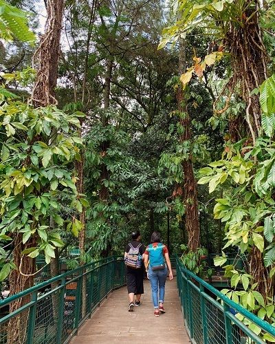

Diklaim sebagai salah satu tempat wisata alam yang paling banyak dikunjungi di kota Bandung selama 2 tahun terakhir, Dago Dream Park akan menjadi tujuan pertama kita di artikel kali ini. Resmi dibuka untuk umum pada tahun 2016, Dago Dream Park menawarkan keindahan alam serta atraksi unik, yang dikemas apik melalui perpaduan unsur modern dan futuristik. Berjarak 15 menit dari House Sangkuriang Bandung, keunikan taman rekreasi ini juga terletak pada desainnya yang terinspirasi dari keindahan ekosistem di Bali, tanpa menghilangkan unsur modern yang menjadi ciri khasnya. Di Dago Dream Park, Anda akan menemukan berbagai atraksi unik seperti Aladdin Carpet – karpet mengambang yang menjadi ikon tempat ini. Selain itu, ada juga Sky Bike, Up House, Sky Tree, dan Uncle’s Barn yang akan menambah keseruan liburan bersama keluarga!

Jika anak-anak mungkin antusias untuk menghabiskan waktu di Dago Dream Park, para anak remaja mungkin menginginkan tempat wisata alam yang menawarkan keindahan serta ketenangan bagi mereka. Tebing Keraton menjadi lokasi yang sempurna untuk kedua hal tersebut. Terletak di sisi utara kota Bandung, Tebing Keraton menjadi kian populer setelah di tahun 2014, tempat ini mulai ‘meledak’ di sosial media lewat foto-foto yang diposting oleh para pelancong. Menurut Indonesia.travel, nama Tebing Keraton sendiri sebenarnya baru digagas sejak beberapa tahun terakhir. Warga lokal lebih mengenal tempat ini dengan sebutan Cadas Jontor, karena ada tebing batu berukuran raksasa yang menjadi ikon dari tempat ini. Dari tebing besar ini, pengunjung dapat menikmati keindahan pemandangan hutan, perbukitan, sungai, serta hamparan sawah yang mengelilingi wilayah tersebut. Mengingat Tebing Keraton bukanlah tempat wisata alam yang cocok dikunjungi anak-anak berusia di bawah 5 tahun, ada baiknya Anda mencari informasi mengenai tempat ini sebelum Anda berangkat.

Pada bulan Agustus, 2018, Orchid Forest Cikole resmi dibuka untuk umum dan menambah daftar panjang dari keberadaan objek wisata alam di Lembang. Berjarak 45 menit dari Bandung, Orchid Forest Cikole menjadi tempat wisata alam yang cocok bagi orangtua yang menginginkan anak-anak mereka untuk belajar sambil bermain. Selain pemandangan alamnya yang indah, udara sekitarnya yang menyegarkan, serta spot-spot menarik yang Instagramable, Orchid Forest Cikole juga merupakan rumah bagi hampir 20.000 varian Anggrek asal Indonesia, Argentina, Peru, Filipina, dan masih banyak lagi. Di sini, anak-anak akan belajar untuk mengenal berbagai jenis Anggrek, habitatnya, serta cara terbaik untuk melestarikannya. Selain itu, di sini Anda juga bisa menikmati berbagi aktivitas outdoor yang menyenangkan – mulai dari Flying Fox, Rabbit Playground, dan Garden of Light. Jika Anda berencana mengunjungi Orchid Forest Cikole di liburan sekolah kali ini, pastikan Anda membawa pakaian hangat ya, karena udara di sini cukup dingin.

Objek wisata bernuansa alam yang juga berlokasi di wilayah Bandung Utara ini wajib masuk ke dalam daftar kunjungan Anda. Berjarak 30 menit dari House Sangkuriang Bandung, Nu Art Sculpture Park merupakan galeri seni berkonsep taman yang menjadi destinasi sempurna bagi para orangtua yang ingin memperkenalkan seni pada anak sejak dini. Diresmikan dan dibuka untuk umum pada tahun 2000, Nu Art Sculpture Park menjadi rumah bagi karya-karya seni terpopuler milik Nyoman Nuarta sejak awal ia merintis karir. Beberapa tahun berselang, tempat ini pun juga menjadi rumah pamer bagi berbagai karya seni modern dan kontemporer dari seniman-seniman kenamaan tanah air. Fakta menarik lainnya, Nu Art Sculpture Park menjadi basecamp tetap Nyoman Nuarta saat sedang mengerjakan patung Garuda Wisni Kencana loh! Jadi selain bisa menikmati keindahan alam sekitar serta karya-karya seni yang dipajang di sana, Anda juga bisa menjadi bagian dari sejarah jika berkunjung ke tempat ini.

Bagi Anda yang tinggal di sekitar Dago, mungkin Anda dapat dengan mudah mengenal tempat ini dari foto di atas. Namun, bagi Anda yang belum mengetahui keberadaan hutan kota yang satu ini, maka liburan sekolah dapat menjadi waktu yang tepat untuk mengenal Forest Walk Babakan Siliwangi secara lebih mendalam. Diakui oleh PBB sebagai salah satu hutan kota di dunia pada tahun 2011, Forest Walk Babakan Siliwangi pun menjadi oasis di tengah kota Bandung yang sibuk dan padat. Di hutan seluas 3,8 hektar ini, para orangtua dapat mengajak anak-anak mereka dalam petualangan menyusuri keindahan hutan kota sembari menghirup kesegaran udara di sekitarnya. Tidak hanya itu, pengunjung juga dapat membawa bekal makan siang untuk piknik di bangku-bangku yang telah disediakan. Yang terakhir, Anda dapat berswafoto di berbagai lokasi Instagramable yang tersebar di area Forest Walk Babakan Siliwangi.